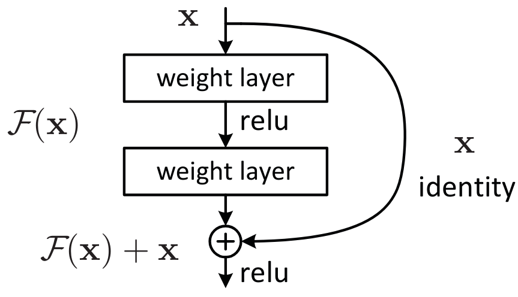

残差连接#
残差连接（也称为跳跃连接）首次出现在论文《深度残差学习用于图像识别》中。这一技术使得深度网络的训练成为可能，而此前深度网络的训练存在较大困难。
如今，残差连接已广泛应用于各种场景：

在本课程中，我们将探讨残差连接为何如此重要，并通过直观的方式理解其核心价值。本笔记本参考了 fastai 课程的相关内容。
直观理解#
残差连接的论文基于一个关键观察：即使使用批归一化（batchnorm），层数更多的深度网络（例如 36 层）在性能上反而不如层数较少的网络（例如 20 层），假设其他参数保持一致。这一现象在训练集和验证集上均有体现，因此**不是过拟合（overfitting）**导致的。

图片来源：原论文
从直觉上看，这似乎不太合理。假设我们将额外的 36 层替换为恒等函数（即不改变输入），那么 56 层的网络理应与 20 层的网络表现一致。然而，实际训练中并非如此，优化过程甚至无法将这 36 层简化为恒等映射。
残差连接的核心思想：
在传统的层变换 x = layer(x) 基础上，残差连接通过 x = x + layer(x) 直接添加输入的恒等映射。这种设计极大改善了网络的优化能力。
另一种理解方式（也是“残差”一词的由来）：
将变换表示为 y = x + layer(x)，等价于 y - x = layer(x)。此时，模型的目标不再是直接预测输出 \(y\)，而是最小化输出与输入之间的差异（即“残差”）。
通用逼近定理指出，足够大的神经网络理论上能够逼近任何函数。然而，理论与实践之间存在巨大鸿沟。深度学习的大量研究致力于缩小这一差距，而残差连接正是这一领域的重大突破之一。
ResNet 基本块#
我们以ResNet 基本块（残差连接的首个版本，适用于卷积神经网络）为例深入探讨。与简单的 x = x + conv(x) 不同，ResNet 基本块采用 x = x + conv2(conv1(x)) 结构，如下图所示：

卷积网络中的挑战： 随着网络深度增加，我们通常希望降低特征图分辨率并增加通道数。但残差连接无法直接处理尺寸不一致的张量相加问题。实践中，我们通过以下方式调整残差分支的张量：
降低分辨率：应用最大池化（Max Pooling）或平均池化（Average Pooling）。
增加通道数：使用 \(1 \times 1\) 卷积（相当于逐通道的线性变换）。
\(1 \times 1\) 卷积的作用： 与标准卷积不同，\(1 \times 1\) 卷积不混合空间信息，仅对通道进行线性组合，常用于调整通道数量或降维。
下面是基于 PyTorch 的 ResNet 基本块实现示例：
import torch.nn as nn
import torch.nn.functional as F
class ResBlock(nn.Module):
def __init__(self, ni, nf, stride=1):
self.convs = nn.Sequential(
nn.Conv2d(ni, nf, kernel_size=3, stride=1, padding=1),
nn.ReLU(),
nn.Conv2d(nf, nf, kernel_size=3, stride=1, padding=1)
)
# Si le nombre de filtre de l'entrée et de la sortie ne sont pas les mêmes
self.idconv = nn.Identity() if ni==nf else nn.Conv2d(ni, nf, kernel_size=1, stride=1)
# Si le stride est différent de 1, on utilise une couche de pooling (average)
self.pool =nn.Identity() if stride==1 else nn.AvgPool2d(2, ceil_mode=True)
def forward(self, x):
return F.relu(self.convs(x) + self.idconv(self.pool(x)))
注意： 激活函数应用于残差分支相加之后，因为 ResNet 基本块被视为一个独立的层。
残差连接的案例说明，实践与实验比单纯的理论分析更为重要。
研究表明（《神经网络损失函数的可视化》），残差连接能够平滑损失函数的优化景观，从而显著改善网络的优化效果：

Bottleneck 块解析#
在《深度残差学习用于图像识别》论文中，还提出了另一种结构：Bottleneck 块，其示意图如下：

左侧为基本 ResNet 块，右侧为 Bottleneck 块。
虽然 Bottleneck 块包含更多卷积层，但由于 \(1 \times 1\) 卷积高效，其计算速度反而比基本 ResNet 块更快。其核心优势在于：
能够在不增加计算成本（甚至减少）的情况下显著提升通道数。
是 ResNet-50/101/152 等超深度网络的标准组件，而基本 ResNet 块则主要用于 ResNet-18/34 等较浅网络。
实践经验： 在 18 层或 34 层的较浅网络中，使用 Bottleneck 块往往能取得比基本 ResNet 块更好的性能。然而，学术界仍普遍沿用基本 ResNet 块，这提醒我们：
“众所周知”的做法未必是最优解，质疑与验证同样重要。
总结： 残差连接是深度学习领域的里程碑式创新。在构建深度网络时，强烈建议默认采用残差结构。